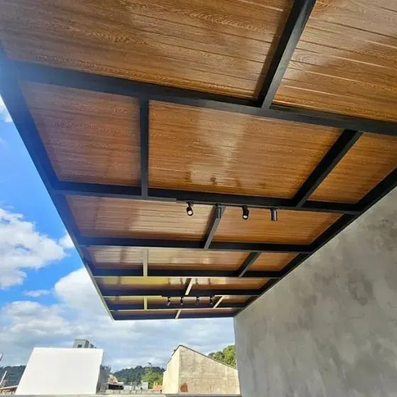
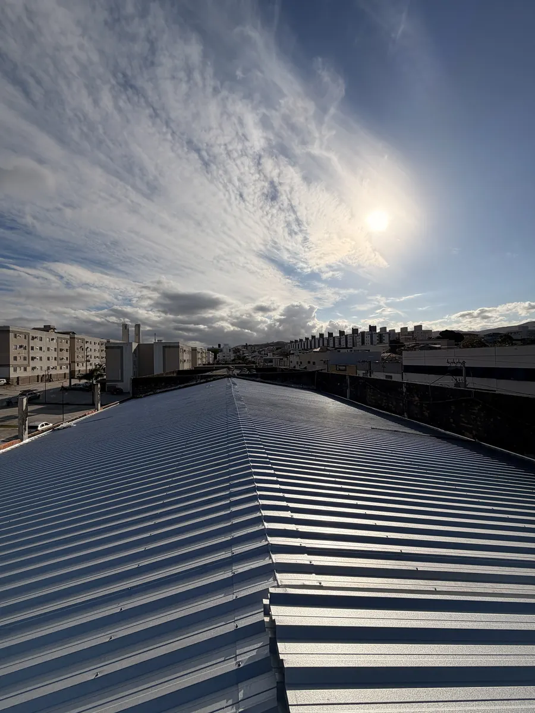
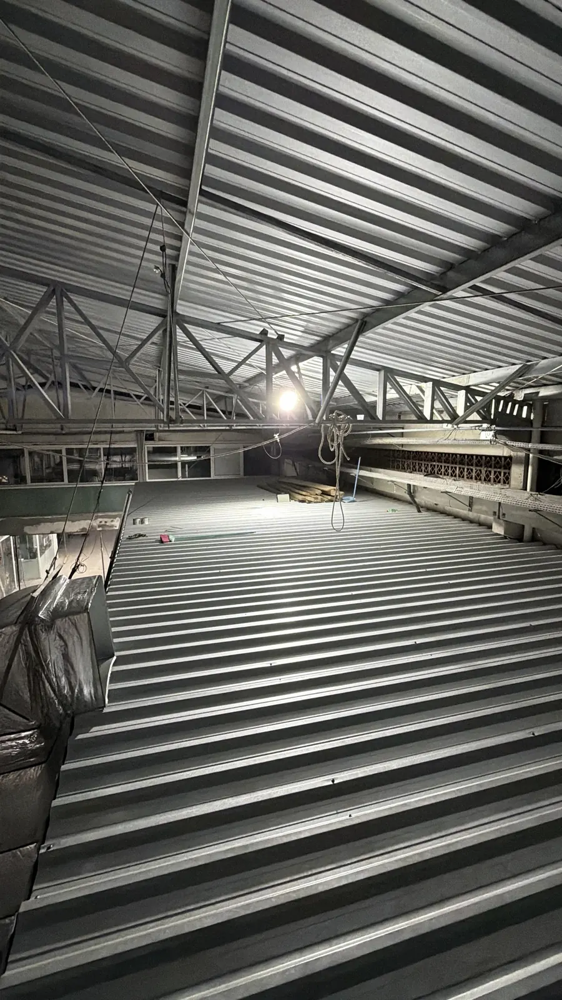
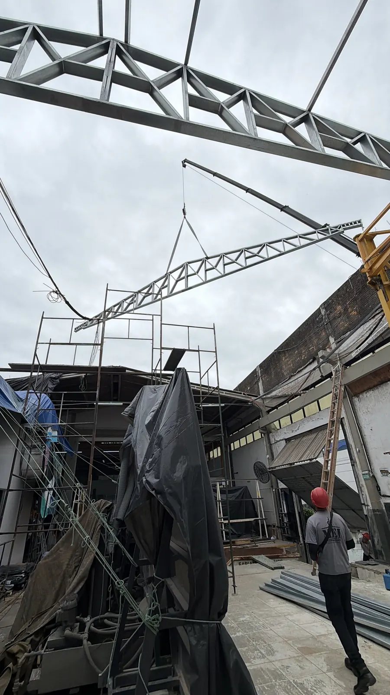
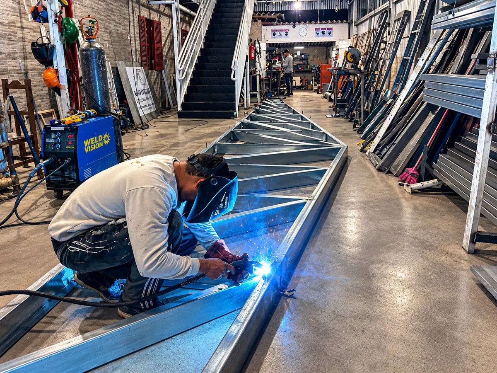
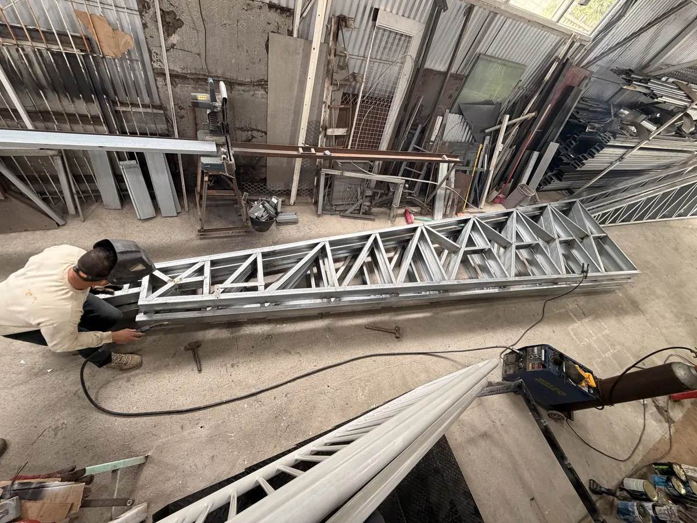

Escadas, coberturas, telhados, galpões e estruturas em São José, Florianópolis e região.
Pedir orçamentoEscadas metálicas fabricadas sob medida para acesso e circulação.
Coberturas metálicas com acabamento sob medida.

Execução de telhado metálico com acabamento limpo.


Montagem de galpões com estrutura metálica e equipe própria.

Fabricação própria: corte, solda e preparo das peças em nossa oficina.

